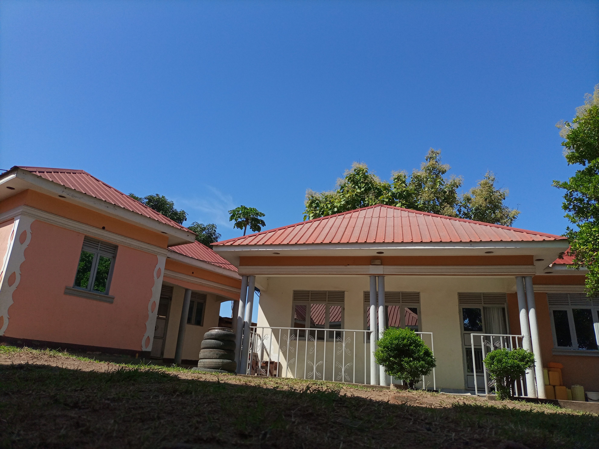
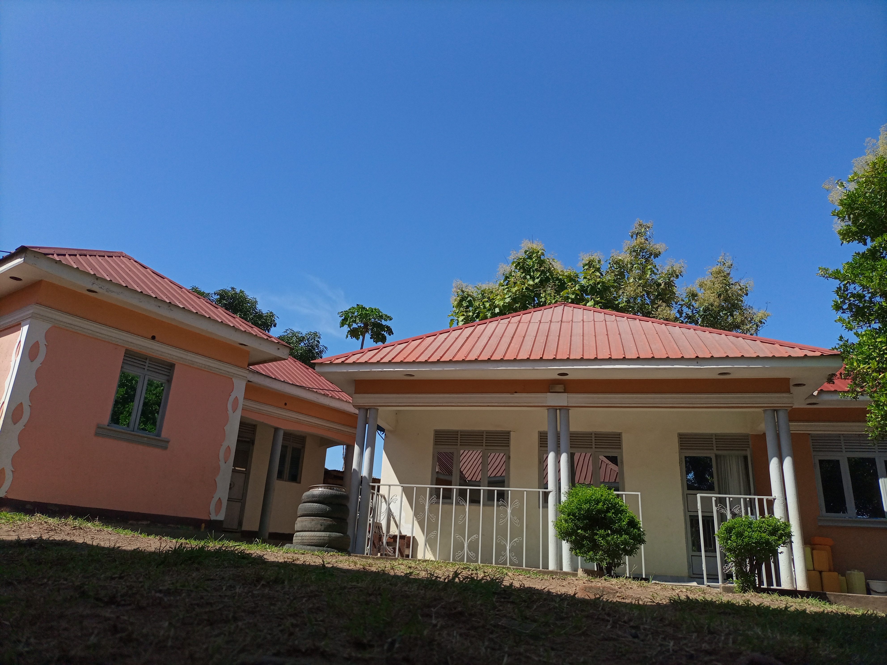
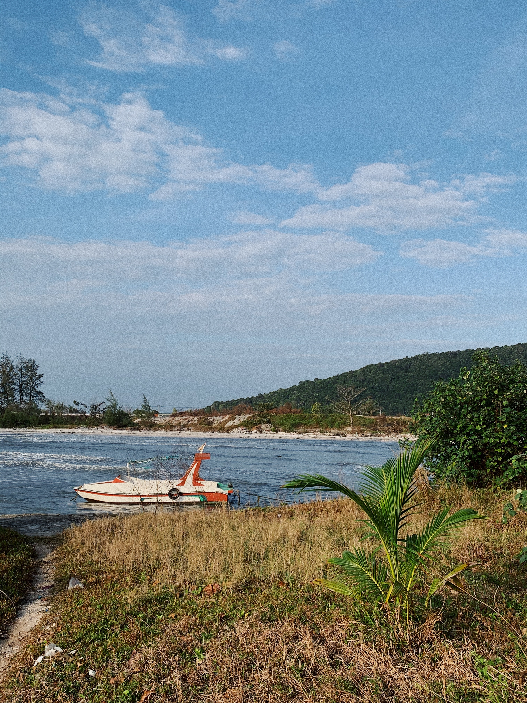
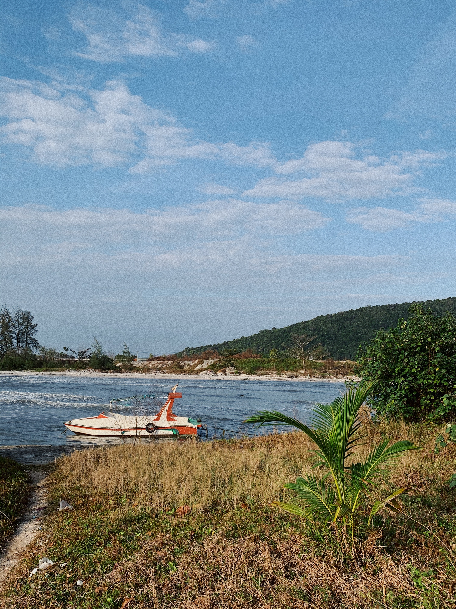

"PHOTOGRAPHY AFFORDS IMMORTALITY". Don’t believe it? Look at all the old photographs your mom or grandmother had around. I personally have a
picture in my china cabinet of a newly married couple in 1911, and I have no idea who it is.
(No, Cousin Ann, I don’t care to know.) I mean, it has their names on the back, but I’m not quite
sure just where in the family tree they belong. I just think it’s cool. They looked so stiff and formal
back then! It sure is different than how we take such natural pictures today. I personally will be immortalized
laughing or smiling in many pictures.
"PHOTOGRAPHY DOCUMENTS YOUR JOURNEY THROUGH LIFE". From your childhood pictures to your child’s pictures to your grandchild’s
pictures. From first smiles to first steps to first dates, life can be documented and preserved. Photography captures personal communication
that would otherwise be lost forever. Many times I’ve noticed something in a photograph that wasn’t apparent when I was snapping the picture.
Sometimes it’s a look on a child’s face or an arm around a lover or something that would have been lost forever if not captured in that very
moment in time.
"PHOTOGRAPHY IS A WONDERFUL STRESS RELIEVER". I mean, really, how much can you concentrate on that all-consuming problem when
you turn your focus instead to the petals of a flower, the wings of a butterfly, the graceful curves of a majestic mountain, or the dimples
of a smiling baby? Go ahead. Take your blood pressure before and after spending just 30 minutes focusing on getting that perfect picture. You’ll
be amazed at the difference. Then, for better overall health, just rinse and repeat often. It’s okay. I promise the problem won’t go away. It’ll
still be there when you’re ready to start worrying again.
"PHOTOGRAPHY INSPIRES YOUR IMAGINATION". My sister is a professional photographer and her creativity while taking photographs of the kids
is what moved her (slowly) toward a career as a photographer. She loves finding and replicating such creative poses as a newborn in a net seemingly
hanging from the sky. She also loves taking a couple and creating romantic ways for the shared love to be shown. It has inspired my own creativity, as
I help her come up with new ideas. For instance, one day I was walking on a road with plenty of random cracks in it. The sun was behind me casting my
shadow forward. We were talking on the phone about how to capture this one particular couple and the strength of their union and I mentioned the cracks
all around them (symbolizing life in general). However, when it came to their shadows, they were solid. In this way it showed the strength of the union
as well as how life couldn’t “crack” them.
"PHOTOGRAPHY AS A CAREER IS POSSIBLE FOR ANYONE WITH A TRUE PASSION FOR IT". There are people who make a living being a photographer. Imagine,
if you will, that every picture you’ve ever seen, whether it’s on a billboard, in a magazine, or on TV, was snapped by someone. There are schools, classes,
books, and websites where you could learn much more than I could ever tell you. Remember, you have your whole life in front of you. Why not aim for a
part-time career on the side?
"PHOTOGRAPHY IS A WONDERFUL, SAFE, AND NATURAL SELF-ESTEEM BOOSTER". My 14 year-old loves the feeling of pride she gets when she takes pictures of
her friends and they turn out good. When she downloads and sees them on the computer she’s in seventh heaven. And, of course, she loves sharing them with her
friends.
"PHOTOGRAPHY BRINGS YOU CLOSER TO YOUR NATURAL SPIRITUALITY". Look around at the wonders of nature. Whether you believe in God or not, you can’t help
but feel a stirring at the beauty surrounding you. You simply can’t help but understand how very small you are while you are realizing how very vast everything
else is.
"PHOTOGRAPHY LETS YOU SEE THINGS THAT YOU MAY NEVER NOTICE OTHERWISE". When I look at something I can’t possibly take in every aspect that is within
my vision. For instance, a beautiful sunset only lasts so long and I may not notice all aspects of how the colors play on the water (I live in a beach town). The
look of the sand (such a simple thing) changes as the sun lowers. All of these aspects are much more evident in a picture, and I can concentrate on the overall
view while knowing that the individual components will not be lost forever.
"PHOTOGRAPHY PRESERVES NEW AND OLD MEMORIES". Think of the wife or husband who has lost a spouse. Or the child who lost a parent. With pictures not only
can they have no fear of forgetting their loved one’s face but can remember exactly what was going on when that picture was snapped, cementing the memory forever.
 

 
